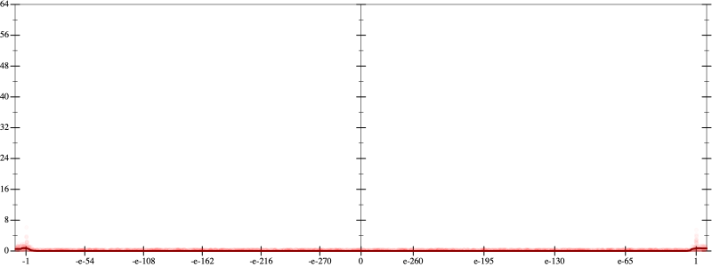
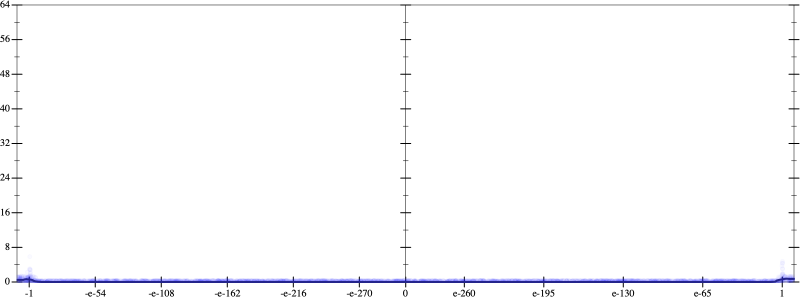
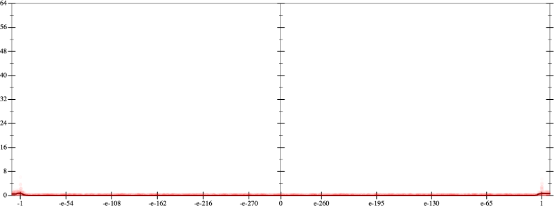
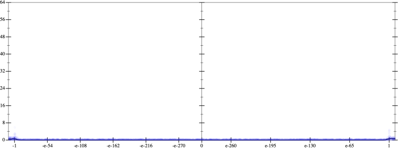

Initial program 0.0
\[\left(\left(-0.3125 + 6.5625 \cdot \left(x \cdot x\right)\right) + -19.6875 \cdot \left(\left(\left(x \cdot x\right) \cdot x\right) \cdot x\right)\right) + 14.4375 \cdot \left(\left(\left(\left(\left(x \cdot x\right) \cdot x\right) \cdot x\right) \cdot x\right) \cdot x\right)\]
Applied simplify0.0
\[\leadsto \color{blue}{\left(\left(x \cdot 6.5625\right) \cdot x + -0.3125\right) + \left(\left(x \cdot x\right) \cdot \left(x \cdot x\right)\right) \cdot \left(-19.6875 + \left(x \cdot x\right) \cdot 14.4375\right)}\]
- Using strategy
rm Applied add-cbrt-cube0.0
\[\leadsto \left(\left(x \cdot 6.5625\right) \cdot x + -0.3125\right) + \left(\left(x \cdot x\right) \cdot \color{blue}{\sqrt[3]{\left(\left(x \cdot x\right) \cdot \left(x \cdot x\right)\right) \cdot \left(x \cdot x\right)}}\right) \cdot \left(-19.6875 + \left(x \cdot x\right) \cdot 14.4375\right)\]
Applied add-cbrt-cube0.0
\[\leadsto \left(\left(x \cdot 6.5625\right) \cdot x + -0.3125\right) + \left(\color{blue}{\sqrt[3]{\left(\left(x \cdot x\right) \cdot \left(x \cdot x\right)\right) \cdot \left(x \cdot x\right)}} \cdot \sqrt[3]{\left(\left(x \cdot x\right) \cdot \left(x \cdot x\right)\right) \cdot \left(x \cdot x\right)}\right) \cdot \left(-19.6875 + \left(x \cdot x\right) \cdot 14.4375\right)\]
Applied cbrt-unprod0.0
\[\leadsto \left(\left(x \cdot 6.5625\right) \cdot x + -0.3125\right) + \color{blue}{\sqrt[3]{\left(\left(\left(x \cdot x\right) \cdot \left(x \cdot x\right)\right) \cdot \left(x \cdot x\right)\right) \cdot \left(\left(\left(x \cdot x\right) \cdot \left(x \cdot x\right)\right) \cdot \left(x \cdot x\right)\right)}} \cdot \left(-19.6875 + \left(x \cdot x\right) \cdot 14.4375\right)\]
Applied simplify0.0
\[\leadsto \left(\left(x \cdot 6.5625\right) \cdot x + -0.3125\right) + \sqrt[3]{\color{blue}{{\left({x}^{3}\right)}^{\left(3 + 1\right)}}} \cdot \left(-19.6875 + \left(x \cdot x\right) \cdot 14.4375\right)\]
 
